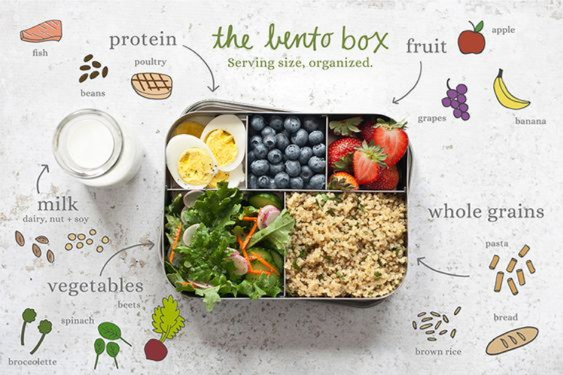

Build Healthy Lunchbox!
No more Allergy!
Living with allergies is tough and that’s why we bring to you interesting facts and articles to adapt to
the situation. Migrating to a new country brings a new set of challenges and lifestyle issues.
You are not alone.
Creat lunchbox
Every Child is different. Don't blame them or their genetics.
Egg
Dairy Products
Peanut
Tree Nuts
Sesame
Soy
Wheat
Fish
Tips
Grain - Grains are high in natural fiber and are an important source of many nutrients. Eating grains reduces the risk of chronic disease.
Vegetable - Eating more vegetables can increase your intake of fiber and potassium, which may help prevent some types of cancer.
Dairy - Dairy products can provide calcium and vitamin D, which improves skeletal health in children as they grow up.
Protein - Protein is an important part of a healthy diet. It is an energy source necessary for the growth and repair of cells in children’s bodies.
Fruit - The fiber in fruit can help to lower cholesterol. Eating fruits containing high vitamin C, such as oranges and strawberries, can improve your child’s immune system.
Drink - Drink enough water to boost your child’s diet. Drink water regularly throughout the day to flush waste from the body.
Create Your Lunchbox!
Grain
 Vegetable
Vegetable
Dairy
Protein
Fruit
Drink